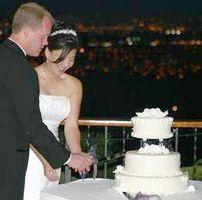

My colleague read my blog, and she wanted me to write about my current life, not about the things in the past that I have no power to change. Since the last time I wrote in this blog, something extraordinary has happened, actually. My life has been going uphill dramatically, and I do feel like a new person.
One afternoon, I took my mother to her favorite restaurant. She probably knew what was going on, as I had never taken her out before. Long story short, I wanted to tell her that Rich and I were getting married when my mother was in a good mood; however, I scrapped that idea after the disastrous lunch. I brought my mother up to my apartment, hoping that my mother would catch a whiff of the fact that Rich and I were living together. She did not, but that did not stop her from criticizing every little thing about the interior of my apartment.
Later that night, while I was lying in my bed, I realized something. She did not not notice that something was going on; she was just using, no, attacking me with her invisible strength.
“[My mother] was the quen, able to move in all directions, relentless in her pursuit, always able to find my weak spots”(Tan 199).
I decided that if she was going to play this game, then I had to attack back. I invited Rich over for my mother’s birthday dinner. If I thought the lunch with my mother was a disaster, I have no idea what word describes that night. Rich brought a bottle of French wine, which he drank 2 cups of, while everyone only had a sip or two. He insisted on using chopsticks, which ended up with Shoshana laughing uncontrollably when the eggplant in his chopsticks dropped into his lap.
I should have told him more about Chinese table manners; to be honest, I forgot most of them as well. My mother offered him some of her shrimp and snow peas. He helped himself to a significant portion, while everyone had not even taken a small spoonful. However, the worst thing that night was when he “critisized” my mother’s cooking. He did not even know what he did. It is a Chinese custom to “insult” your cooking to seem humble and get compliments from others.
Rich said, “You know, all it needs is a little soy sauce”(Tan 197). Then, horrified, I watched as he grabbed the bottle of soy sauce and poured a river of soy sauce directly on the platter. Seeing that black liquid drip into the seeps of the pork skin, my only thought was that there was no way my mother would let me marry this man.
Here I was, in bed again, lying, thinking about the disastrous night that everyone had. I was not going to let my mother win, again. I crept downstairs and shook my mother up. I sucked in a deep breath, and whispered to her that Rich and I were getting married.
What she said after caught me off guard. She replied with, “I already know this”(Tan 200). I thought she was going to protest and make me run away from Rich, but she understood. Loving, I daresay. We ended up talking all night, catching up on all the things we had missed. For the first time in a long time, I was glad my mother and I were getting along.
 Jong I just came back from my honeymoon with Rich and my mom. Our first destination was my mother’s hometown, Taiyuan. China was so beautiful, and I was glad to be embarking on that journey with my mother and Rich.
I finally understood my mother, and she understood me. We have not had any arguments over our trip, and I hope we will never have. As for Rich, I am glad he can be the father to my dear Shoshana.
I have also been thinking. I have avoided chess for so long, mainly because I was trying to avoid my mother. I should start playing again, and maybe one day, I will prove Bobby Fischer wrong.
Thank you so much for making me write these blogs. Writing your feelings out does help sometimes. It gave me a new outlook on the events that happened in my life, and I am able to analyze and reflect from it.